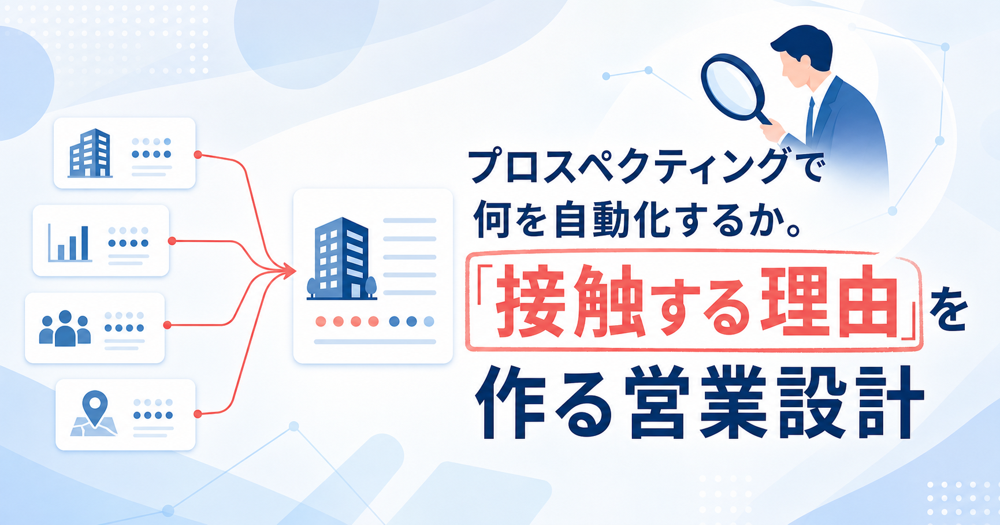
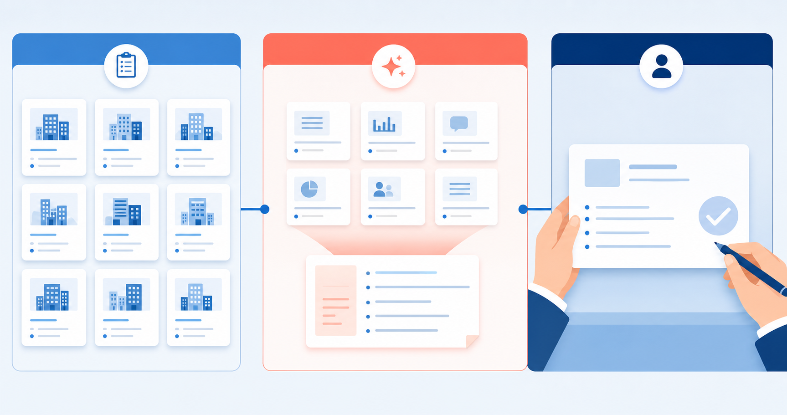
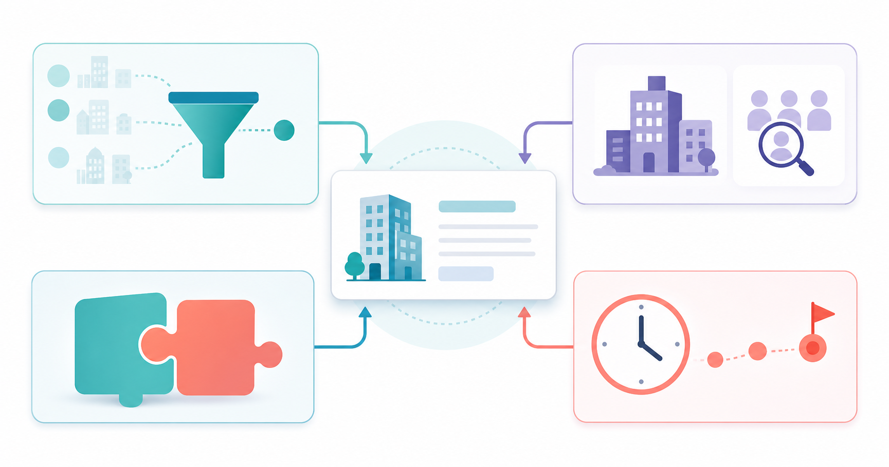
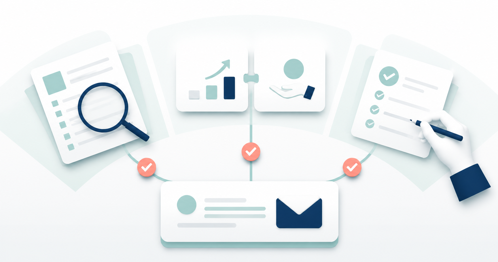
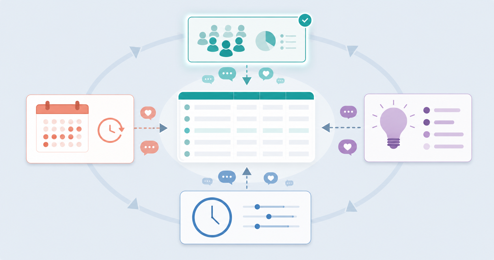
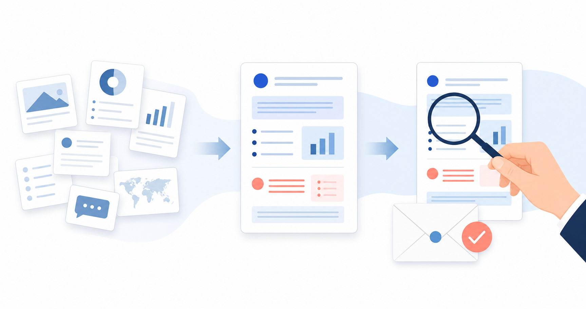
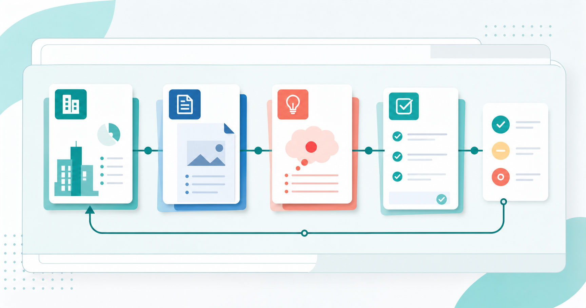

プロスペクティングで何を自動化するか。「接触する理由」を作る営業設計
みなさんこんにちは、Valorize AI代表の鈴木創也です。
新規顧客の候補を見つけ、連絡する相手を選び、最初の連絡を行うまでの活動は、一般にプロスペクティングと呼ばれます。どこまで自動化するかは、利用するツールと業務手順によって異なります。
候補企業の抽出や文面の準備を効率化して送信件数が増えても、それだけでは新規開拓が改善したとは判断できません。担当者が「なぜ今、この企業へ連絡するのか」を説明できなければ、反応がなかったときに、対象企業、使った情報、提案内容のどこを見直すべきか分からないからです。送信件数とともに、連絡先を選んだ根拠も管理する必要があります。
優先する顧客群から対象企業を選び、確認した事実と自社が支援できる可能性を結び付けて、「なぜ今連絡するのか」を説明する根拠が、接触する理由です。以下では、営業支援ツール、生成AI、人の役割を分けながら、接触する理由を作り、確認し、改善する手順を示します。
プロスペクティングで自動化する作業を分ける

プロスペクティングでは、あらかじめ決めた条件どおりに処理する機能と、公開情報を整理して文面の下書きを作る生成AIの機能を利用できます。一つの製品が両方の機能を持つ場合もありますが、各機能に任せる作業を分けると、人が確認すべき範囲を決めやすくなります。
営業現場では、生成AIを文面作成に使う例があります。ハンモックの「生成AIの営業活用に関する実態調査」では、生成AIを営業で利用した経験がある336名のうち、56.85％が生成AIをメールや提案文の作成に利用していました。同じ調査で課題の上位に挙がったのは、情報の正確性30.3％、セキュリティと個人情報保護29.4％でした。この課題に回答したのは、営業部または営業企画部の1,000名です。生成AIを利用する業務と課題についての回答は、それぞれ母集団が異なります。また、この調査は、生成AIの利用がこれらの課題を引き起こしたという因果関係を示すものではありません。生成AIが文面を作成できても、そのまま顧客へ送れるとは限りません。
営業支援ツール、生成AI、人の役割
プロスペクティングの作業と判断は、次のように分けられます。
- 営業支援ツールで自動化しやすい定型処理
あらかじめ決めた条件による候補企業の抽出、送信時刻の設定、対応漏れの通知、送信結果の記録などです。 - 生成AIで支援しやすい準備
公開情報の要約、企業ごとの情報整理、自社が支援できる可能性と文面の下書きなどです。 - 人が責任を持って行う判断
人は、優先する顧客群と提案の方向性を決めます。収集した情報と下書きを利用できるか確認し、顧客に送る内容と例外的な案件の扱いを確定します。
営業支援ツール、生成AI、人の役割分担を決めずに送信作業だけを速めると、調査が不十分な文面や、誤った仮説に基づく文面まで短時間で送られる可能性が高まります。送信直前に担当者の注意力だけで誤りを防ぐのではなく、どの情報を集め、何を確認すれば送信できるのかを先に決める必要があります。
企業名入りの文面だけでは接触理由にならない
買い手は、一般的な商品情報に加えて、営業担当者ならではの情報や提案を期待しています。HubSpot Japanの「日本の営業に関する意識・実態調査2026」では、買い手515名の81.2％が、営業担当者だからこそ提供できる何らかの価値を期待していました。回答の上位には、個別事情を汲んだ提案、潜在的なニーズを引き出すこと、共感と気配りが挙がりました。この調査だけで個別提案が返信率を高めるとは断定できません。
企業名、業種、所在地を差し替えれば、個別に用意した文面のように見えます。しかし、その情報だけでは、相手企業の状況と自社の提案がどう関係するのかを説明できず、個別事情を汲んだ提案にも、潜在ニーズを確かめる問いにもなりません。
例えば、ある企業が営業拠点の開設と営業担当者の募集を発表したとします。「新しい営業拠点を開設し、営業担当者を募集している」は確認できる事実です。この情報を根拠に「新任担当者の立ち上げに課題があるはずです」と書けば、まだ確かめていない仮説を事実のように扱うことになります。
接触する理由を作るには、確認した事実をもとに、相手企業にどのような課題があり、自社がどう支援できるかという仮説を立てます。その仮説を、顧客との最初の対話で状況を確かめるための問いに変えます。企業についてあらゆる情報を集める必要はありませんが、連絡の根拠となる事実と、自社が支援できる可能性は明確に区別する必要があります。
接触する理由を作る四つの材料

接触する理由を担当者の文章力だけに任せると、調査の深さや送信するかどうかの判断が担当者によってばらつきます。そこで、接触する理由を、誰に届けるか、何が起きているか、何を支援できるか、なぜ今なのかという四つの材料に分けて考えます。この四分類は、公的機関や調査会社が定めた標準手法を引用したものではなく、営業チームで確認しやすいように筆者が整理したものです。
1. 誰に届けるか
最初に、営業チームが優先する顧客群を定めます。業種、企業規模、事業の段階などの条件に加えて、自社がその顧客群にどのような価値を提供できるかも明確にします。
例えば、「従業員数が一定以上の企業」という条件だけでは、対象企業を抽出できても、優先する理由までは説明できません。自社が営業組織の立ち上げを支援しているなら、「複数拠点で営業組織を展開する企業」は自社の支援範囲と重なるため、優先候補にできます。ここでは自社の支援範囲と重なる顧客群を絞りますが、個別企業の課題までは決めません。新任担当者の立ち上げが実際に課題になっているかは、企業ごとに確かめなければなりません。
2. 何が起きているか
次に、対象企業について確認できる事実を集めます。事業内容、採用情報、製品の更新、拠点や組織の変化、企業の公式発表、既存のやり取りなどが候補です。
事実には出典と確認日を残します。公開時期が分からない情報や、対象企業の情報か確認できないものは、接触理由の根拠に使いません。既存顧客や過去の商談情報を生成AIに入力する場合は、利用するサービスの規約と社内ルールに照らして、入力してよい情報かも確認します。
NTTデータが紹介するテプコカスタマーサービスの営業業務変革PoCでは、建物の所在地、築年数、屋根の形状や材質など、営業先を絞るために必要な情報の調査を自動化しました。これは特定の企業と商材に関する一事例であり、あらゆる営業に同じ調査項目を使えるわけではありません。参考になるのは、集められる情報を無差別に増やすのではなく、営業先を選ぶ条件に合わせて調査内容を決めた点です。
3. 何を支援できるか
企業の事実がそろっても、それだけでは提案になりません。その事実を踏まえて起こり得る課題や事業機会を整理し、自社が支援できる可能性を仮説として置きます。
営業拠点の開設と営業担当者の募集という事実から想定できる影響は、一つではありません。人員の採用や育成、営業管理、顧客対応、社内連携など、複数の業務に影響が及ぶ可能性があります。自社が営業組織の立ち上げを支援できるなら、例えば「新拠点で営業体制を整える際、新任担当者の教育や、営業活動を始めるための準備に大きな負担がかかっていないか」と問いかけます。
仮説は、最初の対話で顧客の状況を確認するために使います。
4. なぜ今なのか
最後に、前の三つの材料を一文でつなぎます。誰に、どの事実を基に、どの課題や機会について話したいのかを説明し、今連絡する理由を確かめます。
先ほどの例なら、「当社は複数拠点で営業組織を展開する企業を支援しており、御社が営業拠点を開設し、営業担当者を募集していると拝見したため、新任担当者の教育や営業活動を始める準備に負担が生じていないか伺いたい」と整理できます。営業拠点の開設と募集は事実ですが、新任担当者の教育や営業活動の準備にかかる負担は仮説です。一文の中でも両者を分けておけば、顧客の事情を決めつけずに連絡できます。
接触する理由を説明できない場合でも、直ちにその企業を送信対象から外す必要はありません。情報が不足していれば追加で調査し、連絡するには時期が早ければ保留します。別の接触方法が適切なら、その方法に切り替えます。送信を見送る選択肢を持てば、対象企業の数を維持するためだけに根拠の乏しい理由を作る事態を避けられます。
送信前に確認する三つの品質基準

四つの材料がそろっても、担当者ごとに判断基準が違えば運用は安定しません。営業責任者がすべての文面を書き直すのではなく、根拠を確認できるか、相手にとって意味があるか、担当者が送信内容を説明できるかという三つの基準で文面を確認します。この三つは、この記事で実務向けに整理した確認基準です。法律で一律に定められた義務ではなく、営業成果を保証するものでもありません。
1. 根拠を確認できるか
接触理由の出発点となる企業情報について、出典と公開時期に加え、その情報が対象企業のものかを確かめます。古い情報、出典のない要約、他社にも当てはまる一般論だけで作った文面は、追加調査に回します。
個人情報保護委員会の「生成AIサービスの利用に関する注意喚起等」は、生成AIの出力に不正確な個人情報が含まれる可能性を示しています。また、個人データを入力する場合は、入力したデータをサービス提供者が機械学習に利用しないかなど、サービスの利用条件を確認するよう求めています。公開情報を使って企業を調べる場合も、生成AIが示した担当者情報は元の出典で確かめてから連絡に使います。
2. 相手にとっての意味があるか
文面が自社の商品説明だけで終わっていないかを確認します。相手企業について確認した事実と自社が支援できる可能性をつなぎ、相手がどのような課題について話せそうかを判断できる文面にします。
ここで「御社に最適です」と結論を急ぐと、まだ確かめていない仮説を押し付けることになります。「この変化に伴って、こうした課題はありませんか」と問いかける形にすると、顧客が自社の状況を伝えやすくなります。
3. 担当者が送信内容を説明できるか
担当者は、生成AIで作った文面であっても、根拠と仮説を自分の言葉で説明できるかを確認します。説明できない部分があれば、文面だけを整えず、元になった企業情報や自社が支援できる可能性を見直します。
経済産業省の「AI事業者ガイドライン（第1.2版）」は、AIの性質、用途、リスクに応じて、人が制御できる仕組みを設ける考え方を示しています。同ガイドラインは、すべての営業メールに人間の確認を法的に義務付けるものではありません。営業では、誤った企業情報や不適切な提案が顧客との信頼関係に直接影響するため、誰がどの段階で内容を確認し、例外が生じたときに誰が判断するかを業務手順に組み込みます。
三つの基準を共通の送信条件にすれば、担当者ごとの判断のばらつきを抑え、説明できない文面を追加調査に回しやすくなります。
反応を接触理由の改善に生かす

送信後に返信率だけを指標にすると、件名や言い回しの変更に意識が偏ります。もちろん文面も改善対象ですが、反応がなかった理由を文面だけに求めることはできません。対象企業の選び方、情報の鮮度、自社が支援できる可能性、連絡した時期も、検証すべき要素だからです。
振り返りでは、結果を四つの材料と照らし合わせます。
- 特定の顧客群で返信がない状態が続いた
顧客群の選び方を原因と決めつけず、まず選んだ顧客群と自社が支援できる領域との関連を検証します。 - 文面に使った企業情報が古かった
調査する情報の種類だけでなく、情報を収集し直す頻度や、確認日を記録する方法も見直します。 - 顧客との会話から、仮説と実際の状況が異なると分かった
企業について確認した事実から導ける範囲を超えて課題を推測していないか、自社が支援できる範囲を広く解釈していないかを確かめます。 - 担当者が連絡した理由を説明できなかった
個人の経験不足だけに帰さず、調査項目、仮説の作り方、送信前の確認手順に不足がないかを確認します。
返信がなかったという結果だけで、接触理由が悪かったと断定することはできません。商材、時期、受け手の事情など、営業側から確認できない要因もあります。一件ごとの結果に過剰反応せず、似た条件の企業群ごとに傾向を確認します。そのうえで、顧客群、企業情報、自社が支援できる可能性、連絡時期のうち、一度の検証で変える要素を一つに絞ります。似た条件の企業群について変更前後の傾向を継続して確認し、結果だけから特定の変更に効果があったと断定しないようにします。
一斉送信のテンプレートだけを改善していると、企業名を差し替えるだけの方法に戻りやすくなります。誰に、どの事実を使い、どの仮説を立て、いつ連絡したかまで記録すれば、次の営業担当者もその記録を判断の根拠として使えます。
生成AIは準備を支援し、人は顧客対応に責任を持つ

接触する理由を一社ごとにゼロから作る運用では、企業の抽出から文面の準備までに時間がかかります。人が対象企業の条件と確認基準をあらかじめ決めておけば、企業データベースや営業支援ツールで候補企業を抽出し、生成AIで公開情報を整理して、自社が支援できる可能性と文面の下書きを準備できます。
人が企業情報の正しさ、仮説の妥当性、自社の支援範囲との一致、文面の適切さを確認したうえで、送信内容を確定します。顧客との対話で仮説が外れたと分かれば、その結果を踏まえて、次に使う対象条件と調査項目を見直します。
候補企業の抽出、情報収集、文面の下書きといった準備の一部をツールに任せる目的は、同じ作業を毎回一から繰り返す負担を減らすことです。準備の負担を抑えられれば、顧客の反応の分析、提案の調整、顧客との直接対話に取り組む余地をつくれます。送信数と接触理由は対立するものではありません。接触する理由を作る手順を定めれば、送信数を増やす場面でも、顧客ごとの根拠を確認できます。
接触する理由を作り続ける営業運用へ

候補企業の抽出や送信管理を自動化するときは、送信件数と、連絡先を選んだ根拠をあわせて管理します。「なぜ今、この企業へ連絡するのか」を、確認できる事実と自社が支援できる可能性に分けて説明できる状態にします。
誰に届けるか、何が起きているか、何を支援できるか、なぜ今なのかをつなぎ、送信前に根拠、相手にとっての意味、担当者が内容を説明できるかを確認します。送信後は、反応の有無を四つの材料と照らし合わせ、次に使う条件を更新します。
Valorize AIが提供するSales Triggerは、人が定めた対象企業の条件を起点に、企業リストの作成、企業ごとの情報の調査、自社が支援できる可能性や営業メールの文面の準備を半自動化するAIエージェントサービスです。送信前に人が文面を最終確定する運用を前提に、営業担当者が顧客との対話や判断に集中しながら、企業ごとに接触する理由を継続して準備できるよう支援します。